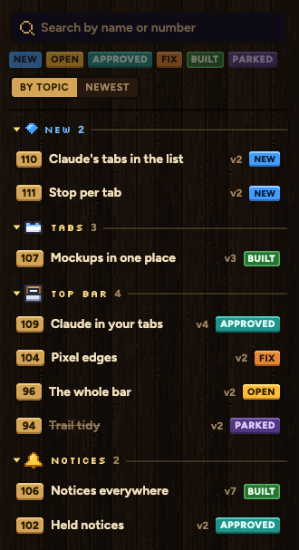
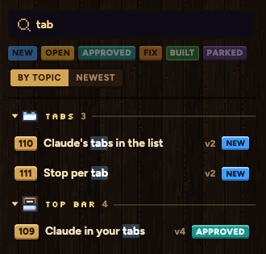
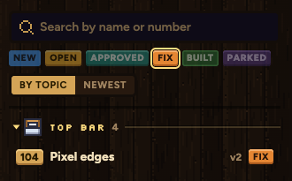
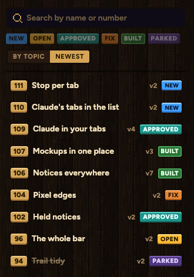
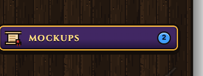

Your picks: new mockups get their own section and a count, plus search, filter by mark, and sort. These are Samara's real Mockups page and tab list. The marks are made up for the picture.
Anything you haven't opened sits in New, above the topics. Open it and it moves back to its topic.

Type a name or number. The list shrinks as you type and the match lights up.

Tap a mark to show only those, here FIX. Tap more than one to mix. Tap again to clear.

Switch from By topic to Newest for one list, latest on top.

The Mockups button in your tab list shows how many are new.
